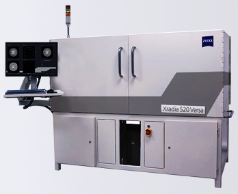

The Technology and Market Landscape for Device and Systems Integration and Interconnect
Now in its 11th year, the longest continuing conference series on this topic - 3D ASIP - continues to be an outstanding venue to meet with leaders from around the world to learn and discuss the latest technology and market insights into 2.5/3D device and systems integration and packaging. The conference format offers attendees a platform to gain the latest information from invited speakers on technology progress and industry trends that define this sector today and tomorrow. A long with the invited presentations, the full program includes various networking functions with opportunities to meet and talk with fellow industry leaders.
Most industry observers believe 3D technology adoption is imminent, offering the best longer-term solution to the industry challenges in size, power, and performance; however the timetable has proven fluid, with most market forecasts to date being perhaps overly optimistic. Today many experts suggest that the technology is in fact ready for large-scale commercial manufacturing adoption, and that the tipping point in driving down costs will be the volume manufacturing of stacked memory with logic. Others point to the enabling features of 3D integration driving development of a range of next-generation systems, from integrated photonics to MEMS and sensor systems. While these and other questions remain, the market opportunities are clearly significant.
3D ASIP targets senior-level technologists, managers, and business leaders from leading companies and organizations from around the world as speakers and attendees, and strives to serve the needs of the entire 3D ecosystem, from technology developers to equipment and materials suppliers to designers, manufacturers, and end users. All speakers are invited. The format of the conference and its presentations enable speakers to present the most up-to-date and forthright perspectives possible, and gives exceptional opportunities to network with, and learn from, other senior-level technology and business leaders.
For more detailed information on this year's event , please visit the conference website at www.3dasip.org. Sponsor and exhibit opportunities are still available on a first-come, first-serve basis.
Santa Clara, CA - September 12, 2014 - The annual GSA (Global Semiconductor Alliance) Awards Dinner Celebration, held in Santa Clara, California, is the industry's premier event. GSA recognizes companies that have demonstrated excellence through their vision, strategy, execution and future opportunity.
The celebration honors the achievements of semiconductor companies in several categories ranging from outstanding leadership to financial accomplishments as well as overall respect within the industry.
2014 marks the 20th year celebration for GSA! Join us for a special evening including a tribute to past Dr. Morris Chang Exemplary Leadership Award winners.
GSA is pleased to introduce our 2014 keynote speaker, Jay Leno
Acclaimed TV late night show host, admired stand-up comedian, best-selling children's book author, much-in-demand corporate speaker, lovable TV and movie voice-over artist, pioneering car builder and mechanic, and philanthropist... it's no wonder that Jay Leno is widely characterized as "the hardest working man in show business."
Jay Leno's late night television ratings domination included more than two decades of "The Tonight Show with Jay Leno," winning every consecutive quarter of his hosting over the past 19 years. After resuming hosting the 11:35 PM program following its one-time interruption, he made it once again the consistent and uninterrupted ratings leader for late night, once again leading all of the ensuing quarters handily, under the supervision throughout of executive producer Debbie Vickers. He has been honored by the Television Academy with an Emmy for "Outstanding Comedy, Variety or Music Series." "The Tonight Show with Jay Leno" has also taken home the trophy for "Favorite Late Night Show" in the annual TV Guide Awards determined by voting viewers, and he was recently installed in the Television Academy's Broadcast Hall of Fame.
For more information or to purchase a table, contact Hayley Warmack. Event website: www.gsaglobal.org/awardsdinner/2014/overview.aspx
Extends Efficiency & Optimizes Use of Xradia Versa Platforms
Pleasanton, CA - September 3, 2014 - (Marketwired) - ZEISS announces automated sample handling for ZEISS Xradia Versa 3D X-ray microscopes (XRM) for submicron imaging. XRM Autoloader helps gain critical efficiency and maximizes utilization of Xradia Versa systems by reducing user-instrument interaction. Sample batches can be run throughout the workday, overnight, and even during typically under-used weekend time.
 Autoloader is flexible for handling diverse sample types in the same queue, offers workflow solutions for volume jobs, and also facilitates precise and repeatable sample measurements. It is especially valuable in industries where increased utilization can provide a positive impact on profitability. Users are able to set up queues of imaging jobs to maximize XRM usage, thus increasing effective throughput. As an additional convenience, users may receive automatic notification, including via their mobile devices if desired, of each successively completed scan.
In today's time-sensitive applications, users benefit from the ability to perform a single batch set-up and allow the system to run automatically, sometimes for days. At the same time, they need flexibility to interrupt one batch to run a higher priority job if needed. Early users of the new Autoloader have improved the efficiency of sample handling by 17-30%. On ZEISS Xradia 520 Versa, Autoloader enhances failure analysis in the semiconductor industry by facilitating the study of controlled collapse chip connections (C4), through silicon vias (TSV), micron-sized bump cracks, voids in substrates and a number of other issues. It also introduces efficiency in the oil and gas industry by setting a queue of up to 14 core plugs at one time.
"We're fortunate to work with the world's leaders in electronics manufacturing and the oil and gas industry," says Dr. Kevin Fahey, head of the ZEISS X-ray microscopy business. "To support their requirements to continually improve operational efficiency, we're committed to continue evolving the power of 3D X-ray microscopy. Innovations like Autoloader streamline processes and deliver higher ROI and efficiency across the widest possible range of industrial applications."
The optional ZEISS XRM Autoloader is available immediately. It integrates seamlessly with Scout-and-Scan user interface versions 10.6 and higher and is a field upgrade option for ZEISS Xradia Versa systems. Autoloader is supplied with fourteen sample holders, and customers are able to select from five different styles. Additionally, ZEISS offers an open design architecture for the sample holders that enables users to create custom designs for their unique applications. Total load capability of the Autoloader is 1.5Kg.